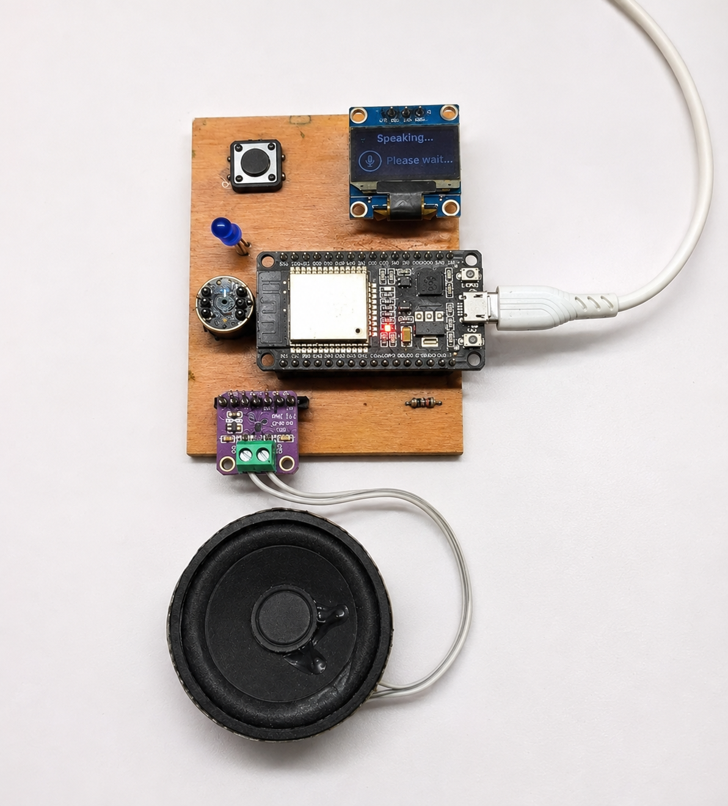

PROJECT 04
AI Chatbot
An ESP32-based AI chatbot developed using the XiaoZhi AI platform, integrating voice input and output for interactive communication.

Project Overview
The AI Chatbot is an embedded systems project designed to explore voice-based interaction using an ESP32 microcontroller. The prototype integrates audio input and output components to support communication between the user and an AI assistant.
Key Components
ESP32 development board, microphone, audio amplifier and speaker.
Project Objective
To explore the integration of embedded hardware and artificial intelligence for developing an interactive voice assistant.